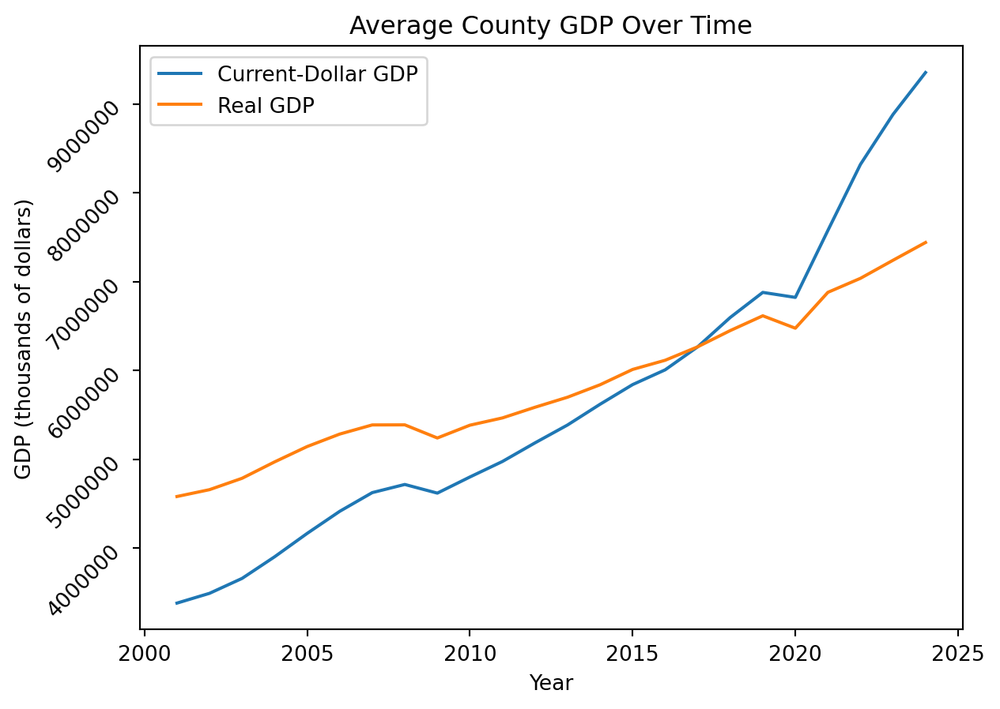
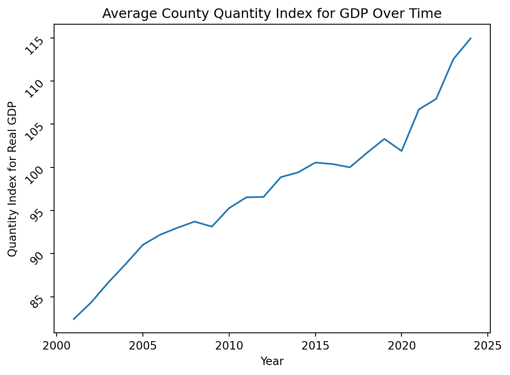

import pandas as pd
from pathlib import Path
import matplotlib.pyplot as plt
import seaborn as sns
import os
from dotenv import load_dotenv
from sqlalchemy import create_engine
load_dotenv()Trueimport pandas as pd
from pathlib import Path
import matplotlib.pyplot as plt
import seaborn as sns
import os
from dotenv import load_dotenv
from sqlalchemy import create_engine
load_dotenv()Truedata_dir = Path(os.environ["DATA_DIR"])
csv_path = data_dir / "gdp_data.csv"df_raw = pd.read_csv(csv_path, encoding='latin-1')df_long = df_raw.melt(
id_vars = ['GeoFIPS', 'GeoName', 'Region', 'TableName', 'LineCode', 'IndustryClassification','Description', 'Unit'],
value_vars = [str(year) for year in range(2001, 2025)],
var_name = 'year',
value_name = 'gdp_value'
)df_final = df_long.pivot(
index = ["GeoFIPS", "GeoName", "year"],
columns = "Description",
values = "gdp_value"
).reset_index()# Get rid of the extra quotes
df_final["GeoFIPS"] = df_final["GeoFIPS"].str.replace('"','') # Only keep counties (have a comma)
df_final = df_final[df_final["GeoName"].str.contains(',', na = False)].reset_index(drop=True)# Now split county and state into their own columns
df_final[["county", "state_code"]] = df_final['GeoName'].str.split(', ', n=1, expand = True)# Check
df_check = df_final[df_final["county"].str.contains(',') | df_final["state_code"].str.contains(',')]It looks like there are a bunch of “independent cities” in Virginia that are causing problems. They are lumped into the nearest county though for FIPS so we’ll just remove them from the state_code column
df_final["state_code"] = df_final['state_code'].str.split(', ').str[-1]Some of the state codes also have a trailing * that we’ll want to remove
df_final["state_code"] = df_final['state_code'].str.split('*').str[0]# Drop the GeoName column
df_final = df_final.drop(columns = "GeoName")df_final.columns = df_final.columns.str.strip()
# Then rename columns
df_final = df_final.rename(columns={
"Chain-type quantity indexes for real GDP": "Quantity Indexes for real GDP",
"Current-dollar GDP (thousands of current dollars)": "Current-Dollar GDP (thousands of dollars)",
"Real GDP (thousands of chained 2017 dollars)": "Real GDP (thousands of 2017 dollars)"
})df_final["year"] = df_final["year"].astype(int)
df_final["Quantity Indexes for real GDP"] = pd.to_numeric(
df_final["Quantity Indexes for real GDP"],
errors='coerce'
)
df_final["Current-Dollar GDP (thousands of dollars)"] = pd.to_numeric(
df_final["Current-Dollar GDP (thousands of dollars)"],
errors='coerce'
).astype('Int64')
df_final["Real GDP (thousands of 2017 dollars)"] = pd.to_numeric(
df_final["Real GDP (thousands of 2017 dollars)"],
errors='coerce'
).astype('Int64')df_final.describe()| Description | year | Quantity Indexes for real GDP | Current-Dollar GDP (thousands of dollars) | Real GDP (thousands of 2017 dollars) |
|---|---|---|---|---|
| count | 75048.000000 | 74660.000000 | 74702.0 | 74702.0 |
| mean | 2012.500000 | 97.576943 | 5645895.169299 | 5831281.638551 |
| std | 6.922233 | 22.214980 | 25239204.088586 | 25319518.900424 |
| min | 2001.000000 | 2.898000 | 4402.0 | 5420.0 |
| 25% | 2006.750000 | 87.804000 | 338912.5 | 357746.0 |
| 50% | 2012.500000 | 98.529000 | 885828.0 | 932938.0 |
| 75% | 2018.250000 | 105.762250 | 2670217.0 | 2773210.0 |
| max | 2024.000000 | 525.810000 | 1006673239.0 | 813692135.0 |
gdp_cols = ['Quantity Indexes for real GDP', 'Current-Dollar GDP (thousands of dollars)', 'Real GDP (thousands of 2017 dollars)']gdp_means_year = df_final.groupby('year')[gdp_cols].mean()sns.lineplot(gdp_means_year, x='year', y='Current-Dollar GDP (thousands of dollars)', label='Current-Dollar GDP')
sns.lineplot(gdp_means_year, x='year', y='Real GDP (thousands of 2017 dollars)', label='Real GDP')
plt.legend()
plt.title("Average County GDP Over Time")
plt.xlabel("Year")
plt.ylabel("GDP (thousands of dollars)")
ax = plt.gca()
ax.ticklabel_format(style='plain')
plt.yticks(rotation=45)
plt.show()
sns.lineplot(gdp_means_year, x='year', y='Quantity Indexes for real GDP')
plt.title("Average County Quantity Index for GDP Over Time")
plt.xlabel("Year")
plt.ylabel("Quantity Index for Real GDP")
plt.yticks(rotation=45)
plt.show()
database_url = os.getenv("DATABASE_URL")
engine = create_engine(database_url)df_final.to_sql(
"county_gdp",
con=engine,
if_exists="replace",
index=False
)48